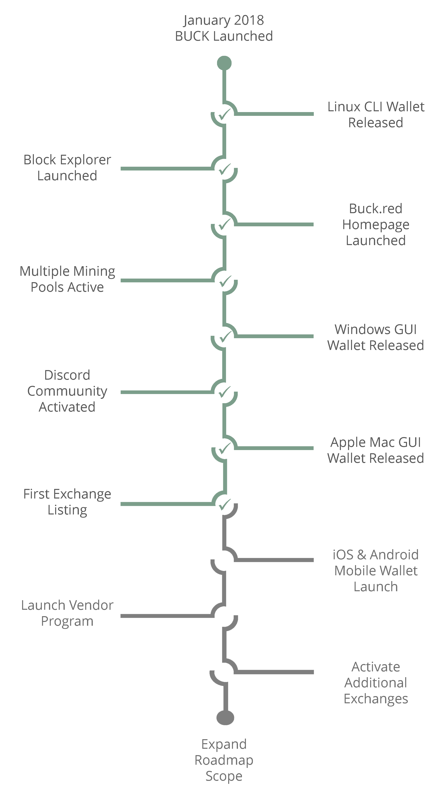

Windows
The original homepage linked a Windows GUI 4.0.4 beta archive. Its Windows CLI entry pointed to the same GUI releases page; a separate CLI download is not confirmed.
BUCK / Project & resources
Explore the BUCK cryptocurrency project, find wallet information, follow published development and connect with the community.
01 / Wallet information
Historical wallet references from the original homepage. Platform support, download availability and release safety have not been reverified. Read project guidance before use.
The original homepage linked a Windows GUI 4.0.4 beta archive. Its Windows CLI entry pointed to the same GUI releases page; a separate CLI download is not confirmed.
The original Mac GUI and CLI entries both linked to the BUCK source repository. These links do not establish an available macOS binary.
The original homepage linked a compiled Linux CLI wallet/node archive, version 4.0.4. Verify requirements and project source before using historical software.
Keep wallet backups secure. Confirm software provenance and current guidance before handling funds.
02 / Development news
· Development Update #1
The published update covers Orchard licensing, Zebra architecture assessment, the BUCK consensus baseline and Ironwood research. These are research and planning topics; this homepage announces no new release or network upgrade.
03 / Resources
Original documents, official artwork and technical reference pages remain available.
The original reference document is preserved unchanged. Its technical claims reflect its publication period.
Explore the original gallery and download the transparent white circular BUCK logo.
Read the existing security and exchange integration pages. Network, RPC, API and service details require current verification before use.
About / Project context
BUCK is a cryptocurrency project. The original homepage describes a decentralized, open-source Zcash fork started from a new Genesis block.
These are the original homepage values, not a current consensus audit. Verify against project source.
The original description discusses zkSNARKs, selective transparency, Overwinter and Sapling, shielded and unshielded transactions, near-instant settlement, and a typical fee of 0.0001 BUCK. It also describes no founders tax or centralized transaction taxes.
These historical statements do not confirm current wallet capabilities or network behavior.
Use dated development news to distinguish published work, research and proposed future directions.
The early homepage used “Crypto Evolved”, “The Future of Cryptocurrency”, “Frictionless Transaction Platform”, and “Why BUCK?” promotional statements. Those slogans and testimonials belong to the original presentation and are not independently verified comparisons or performance claims.
Historical / Services
Retained destinations from the original homepage. These listings do not confirm present availability, exchange listings or support.
The original explorer URL is retained exactly. Explorer and API references are also preserved in the unchanged integration notes.
Original mining pool destinations remain available as references, without confirming that any pool is operating.
The original homepage linked this BUCK/BTC destination. Its missing placeholder image is replaced by a readable link; no current market or listing is asserted.
Historical / 2018-era
The original roadmap begins with January 2018. Its milestones and plans are historical context, not a current schedule or confirmation of completion.

Historical / Portfolio tools
The original Blockfolio and Delta listings are retained. Current availability, app identity and BUCK support are not verified.
Original website and mobile store destinations.
Original website and mobile store destinations.
The original mobile store badge assets remain available.
Historical / Mining calculator
The original CoinCalculators.io widget is retained below as an optional third-party embed. Availability, input assumptions and calculation accuracy have not been verified.
Open the original BUCK calculator →
Historical / Market widgets
These historical third-party widgets are retained for reference. Data availability and accuracy are not confirmed; they are not evidence of a current exchange listing.
Original configuration: BUCK, BTC quote currency, English locale.
Original widget script →Original configuration: coin ID 829653, quote coin ID 1505, light theme.
Original CoinLib widget →CoinLib provider →Community / Original destinations
Follow original project destinations. Historical invitation and discussion links are preserved; their continued availability has not been confirmed.
Explore source or join the original community invitation.
All original thread destinations are preserved.
The original BUCKcoin profile destination is retained.
Help Center
Visit the BUCK Help Center for project guidance and review the existing security information before using historical wallet resources.
Open Help Center ↗Review historical wallet references and Help Center guidance. Current platform support and release safety require verification.
Read published development news or subscribe to RSS.
BUCK 2.0 identifies this website presentation. It does not announce a wallet release, completed milestone or network upgrade.
Read the original security information. Keep wallet backups secure and confirm software provenance before use.